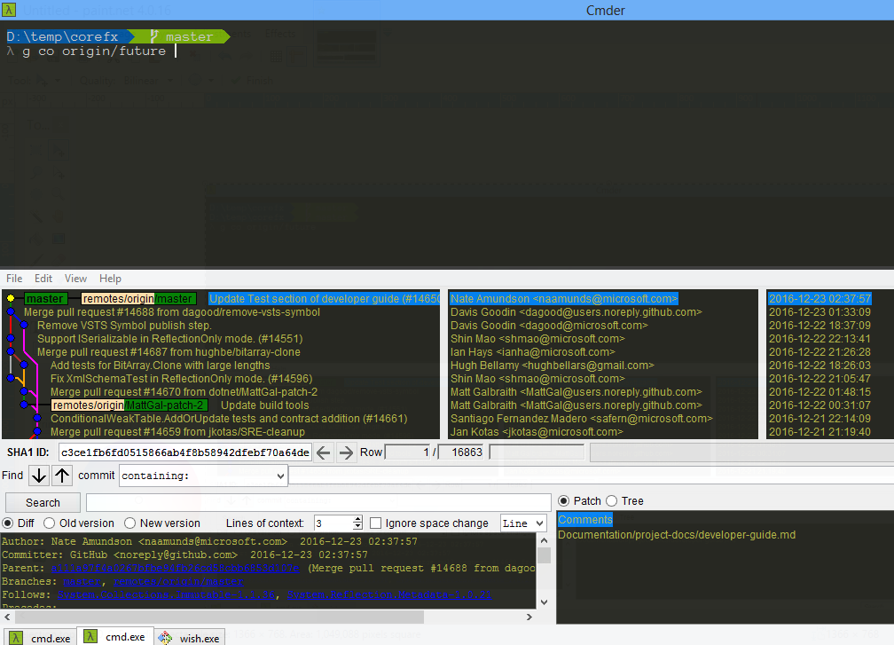
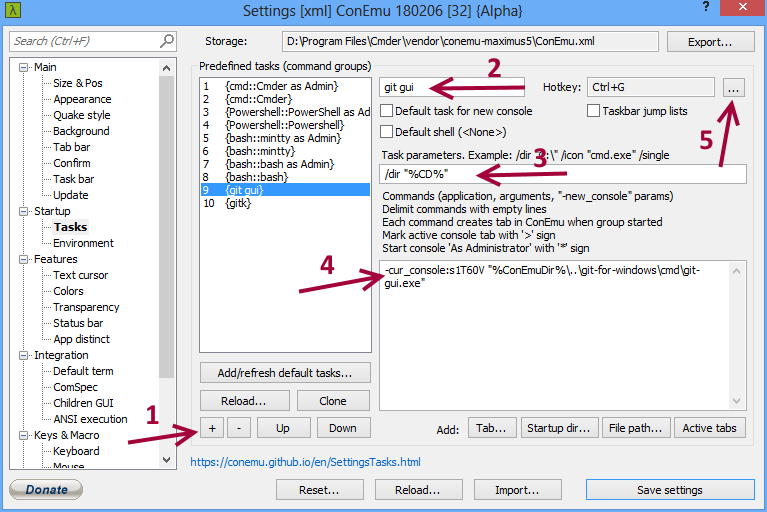
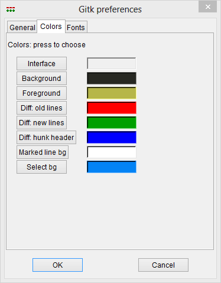

Introduction
I will show you my ultimate git setup for windows. You will read how to configure Cmder for higher productivity and take the power of aliases on steroids. 
Getting started
Cmder
Download and install Cmder. I suggest to go with the full version.
Open cmder and press Win + Alt + P to open settings. Make sure your default startup task is {cmd::Cmder as Admin} by looking at Startup section.
Download powerline_prompt.lua and ultimate-git-win.lua from here in %CMDER_ROOT%\config.
%CMDER_ROOR% is available only in the context of Cmder, so in order to find the Cmder's config folder run
echo %CMDER_ROOT%\configin Cmder.
Download and install Anonymice Powerline.ttf font. Go to Settings > Main > Main console font in Cmder and change it to Anonymice Powerline.
Restart cmder to get the new settings take place.
Git GUI and Gitk into Cmder
Sometimes I need to view/track commits in gitk or to view my staged/unstaged changes (double checking everything to be committed) in git gui, so I've created a tasks with hotkeys to integrate them in cmder. Since they are integrated as part of your terminal you won't do window switching anymore.
Go to Cmder settings and open Startup > Tasks.
Git GUI:

- Create a new task
- Name it
gitgui - Use
/dir %CD%for task parameters - Add
-cur_console:s1T60V "%ConEmuDir%\..\git-for-windows\cmd\git-gui.exe"for command - Assign
Ctrl + Gas a hotkey - Save the settings
Gitk:
- Create a new task named
gitk. - Use
/dir %CD%for task parameters. - Add
-cur_console:s1T60V "%ConEmuDir%\..\git-for-windows\cmd\gitk.exe"for command - Assign
Ctrl + Kas a hotkey - Save the settings
- Open Gitk by pressing
Ctrl + Kand navigate to color preferences (Edit > Preferences > Colors) - And setup the colors as following (if you are using Monokai theme for cmder - default):
- Background: 39 40 34
- Foreground: 182 182 73
- Select bg: 3 131 245

If you add commit or make any changes and want to refresh gitk, just click somewhere in the window and press
F5. The same applies for git gui.
Alias for git
Because I'm too busy (or lazy) to write git every time to make an action, I have alias for that. So instead of writing git status, I'm writing g status.
Let me show you how to set up on your own:
Open %CMDER_ROOT%\config\user-aliases.cmd and add
g=git $* on a new line.
Git aliases
In order to gain some speed when working with git you will need aliases to do more with less. You will became more efficient by typing less characters and executing multiple commands in a single shot. Some quick examples:
git add --all
git commit -m "Commit message"
Could be done by g ca "Commit message"
git checkout master could be g com - it's 19 characters vs 5.
Now let me show you how to do that
Open git config for edit (%HOMEPATH%\.gitconfig) and add the following configurations:
[pretty]
log = %C(dim magenta)%h%C(cyan)%d%C(reset) %C(yellow)[%C(dim green)%an%C(yellow)] %C(bold white)%s%C(reset) %C(reset)
[alias]
s = status -s
pl = pull -r
pls = !git stash && git pull -r && git stash pop # stash unstaged files, pull latest version and pop the stashed files
d = difftool
mrt = mergetool
mr = merge
mrf = merge --no-ff
co = checkout
com = checkout master
cod = checkout develop
rebm = rebase master
rebd = rebase develop
br = branch
ai = add -i
ca = !git add --all && git commit -m
c = commit -m
amend = commit --amend
flush = !git checkout . && git clean -f -d
cln = clean -f
r = reset
r1 = reset HEAD^
r2 = reset HEAD^^
r3 = reset HEAD^^^
l = log -12 --graph --pretty=log
pc = diff --cached # preview commit (staged changes)
prev = log HEAD -1 --pretty=log --stat #--name-status for short info
alias = !git config --list | grep 'alias\\.' | sed 's/alias\\.\\([^=]*\\)=\\(.*\\)/\\1\\t=> \\2/' | sort
Aliases explanation
I'll skip the obvious aliases like s = status -s and explain the others:
alias- lists all available aliasespls- when you have local changes which are not committed but you want to take the latest version this alias is very helpful. It stashes all your changes, then pull the remote with rebase and pops the stashed changescom- checking out master branch andcodis checking out develop branchrebm- rebasing with master branchca- commit & add - adding all changes by using --all flag and commit them. Usage:g ca "<Message>"l- git log but using a pretty format to show the last 12 commits as graphflush- Flushing everything - all changed files are checked out and all untracked files are cleanedr,r1,r2,r3- reset the stage, last commit, last 2 commits or last 3 commitsprev- display summary of changes from the previous commit (changed files, insertions / deletion). Just a quick way to check what is the last thing you have done before the holiday/weekend.hlp- displays a quick cheatsheet (customized it for you)
Clink plugin
The file ultimate-git-win.lua (you already have installed) is doing some magic by adding auto completions for all your aliases (including g=git), files and branches. So if you want to write g alias just write g al and press tab - the rest will be autocompleted. The same is with g co ma will be completed as g co master.
Writing g co origin/ and pressing tab will display a list with all available branches, so you can pick one of them.
Git-TFS aliases
I'm using git-tfs bridge to work with my TFS projects. To save some time I'm using aliases for git-tfs as well:
# TFS ailiases
checkin = tfs checkin # check-in all commits as one changeset
rcheckin = tfs rcheckin --no-merge # check-in all commits as separate changeset
latest = tfs pull -r # getting latest version from TFS with rebase